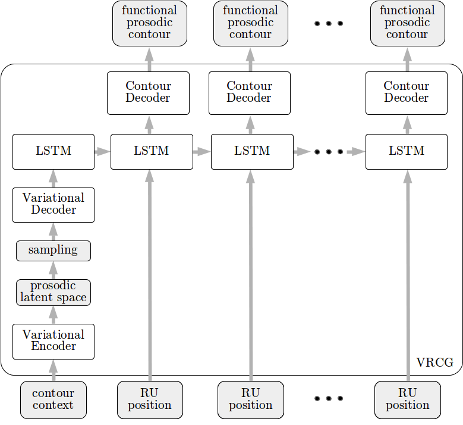
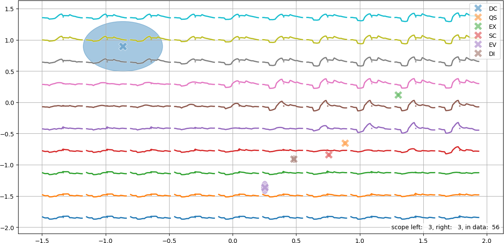

The Variational Recurrent Prosody Model (VRPM) [vrpm] is an extension of the VPM that is built upon variance embedding and recurrent neural network based contour generators (VRCGs), shown in Fig. 1. We use a variational encoder to embed the context-dependent variance in a latent space that is used to initialise a long short term memory (LSTM) recurrent network. The LSTM then uses rhythmic unit positions to generate the prosodic contour. Like the VPM, the VRPM integrates all the VRCGs within a single network architecture and trains them jointly using backpropagation.

Fig. 1 — Variational recurrent contour generator introduced in the VRPM that features a variational encoding mapping function context into a prosodic latent space that is sampled to initialise the LSTM to generate the contour.
The approach used in the VRPM effectively decouples the prosodic latent space from the length of the contour’s scope. This facilitates the exploration of the latent space even for longer contours, as shown in Fig. 2 for the left-dependency (DG) contour.

Fig. 2 — Prosodic latent space of left-dependency function contour (DG) structured based on attitude context with attitude codes same as in Fig. 2; again DC and EX elicit full-blown contours, with EX inducing larger contour prominence.